FIRST POST!!!
I made a blog, it makes sense that if I’m ‘Learning out Loud’, my first post should contain what I learned on ‘How to Make a Blog’. And based on how poorly this post looks, you know i’m not lying about the ‘First Post’ comment.
Educators
My primary source for this is Yihui Xie’s website.
Getting Started
I’m using RStudio as my primary editor.
So you’ll want to install
- The blogdown package
- The Update Metadata Rstudio addin 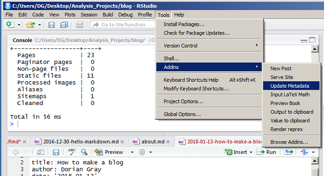
This will handle a lot of the organization/we’re running a static website stuff and lets you create and view your pages.
Originally I used Markdown-editor
- It’s essentially a Python package.
- It seems to run a mini-server on your computer.
- It runs in a browser, left side is an edit screen, right side is what your page will look like. (I never got the the images to work correctly)
back to the RStudio method…
- Create a new project. (Not fully sure why, i’m assuming just for organizational reasons). In the newer versions of RStudio, there’s even a hugo blogdown option when creating a new project.

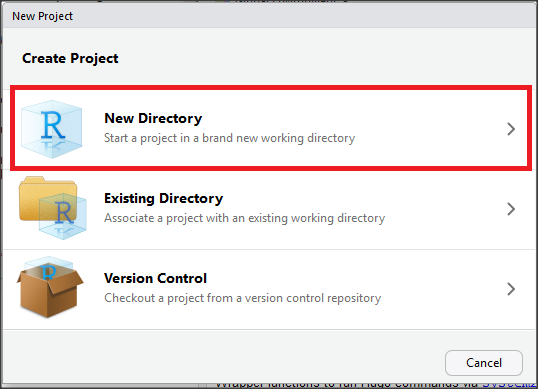
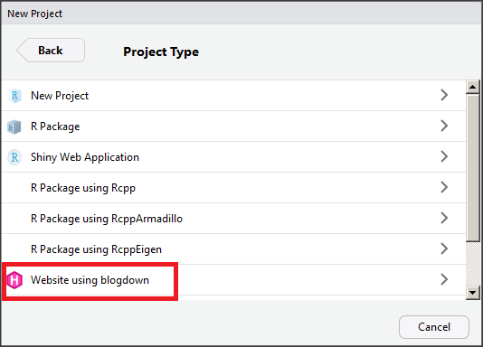
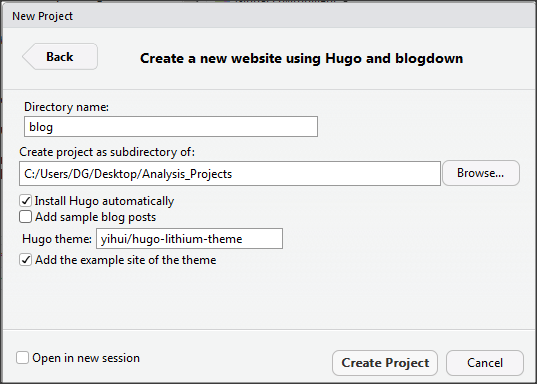
blogdown::new_site()- I had an error, had to
install.package("later")
- I had an error, had to
You’ll see that a bunch of folders, etc have been created.
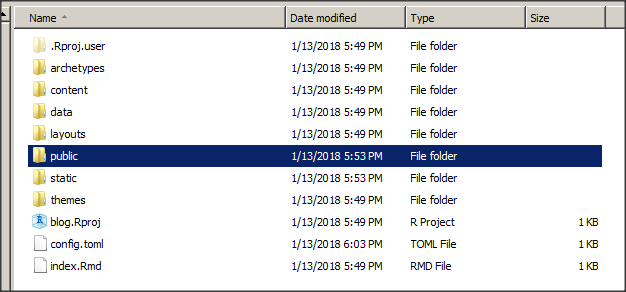
- Spin up the viewer, so we’ll see what this page will actually look like.
blogdown::serve_site()
Here’s how the viewer will look. Doesn’t your default website look great?
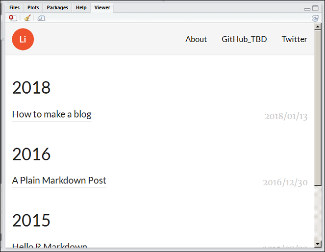
We Can also look at http://127.0.0.1:4321
I prefer this method. It more accuratly shows what your webpage will look like vs the RStudio Viewer.
Lets take a look around
Content
Take a look in your directory. Let’s dive into ‘content’
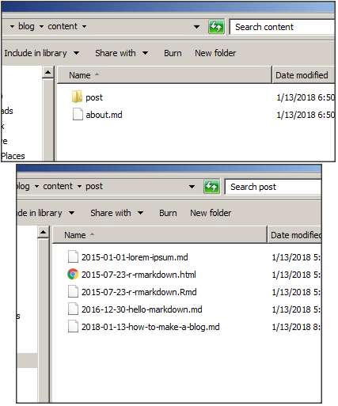
- about.md Is your ‘About’ page.
- ‘post’ is where your post markdown files are stored.
- You’ll eventually want to move those files elsewhere, so they don’t show up on YOUR site. Use them as examples.
config.toml
Open up config.toml at the root level of the directory.
Go ahead and modify the github, twitter, etc links. The logo png, the title description, etc etc etc.
Images
To update the logo, you’ll find it in themes/hugo-lithium-theme/static/images
Now, if you go to: /public/images/ you’ll see all the images from themes/hugo-lithium-theme/static/images
keep in mind that the files in themes/hugo…/static/images will overwrite the files in /public/images/. So updating /public/images/logo.png is pointless as it’ll shortly be updated by /themes/hugo…/static/images/logo.png
New posts
Ok, so you’ve updated the links, changed your logo, and deleted all the example posts.
Now how do you make some posts of your own…
blogdown::new_post(title = 'post name')
This command works, but it isn’t great. Instead try this
blogdown:::new_post_addin()
That’s the code equivelent to this menu tree.
Tools>Addins>Browse Addins
From here, you can select new post. 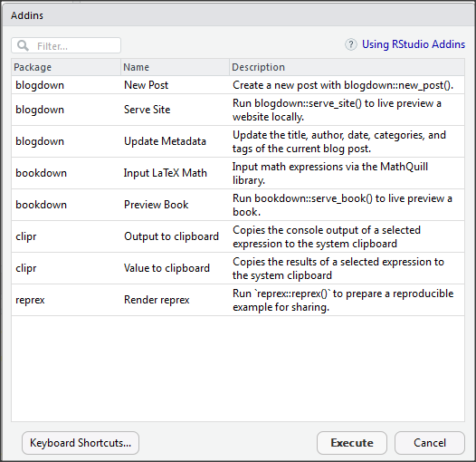
This gives us a nice gui. 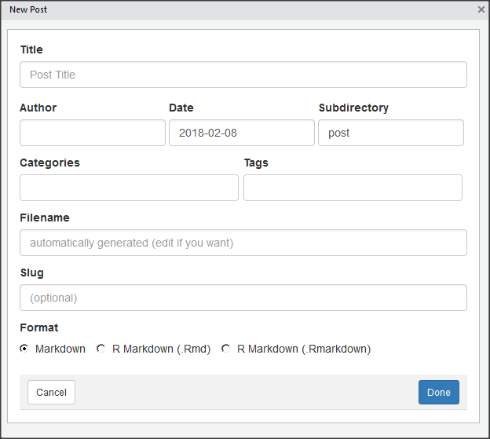
It’s much easier this way to add tags, the author, etc. I agree that the function call is faster, but use the GUI a few times until you’re comfortable with which parameters you care about, etc.
From your PC to the world
Ok, your main page looks… ok
You have a post.
It isn’t great, but it’s enough for a beginner (or at least, it was enough for THIS beginner)
So now, time to let the world see it.
Host
For now, we’ll host this on github.
- Cus it’s free
So head on over to Github. Create an account.
[Creating an account is rather straight forward, so I’ll skip that part]
GIT
Alright, you have a github account setup, now to install git.
There’s a lot of git tools out there, but I don’t like the console commands. So we’ll use a GIT GUI.
For this we’ll use Sourcetree by Atlassian
- Relevant ‘how to install’ documentation can be found here
I had some trouble creating an atlassian account.
You need to have a semi-updated version of Internet Explorer (SORRY)
Other than that, installing Sourcetree is rather straight forward.
Now for the part where me put it on github.
For this part, i’m using the instructions shown at Pages.GitHub
Repository Creation
Create a repository named ‘username.github.io’
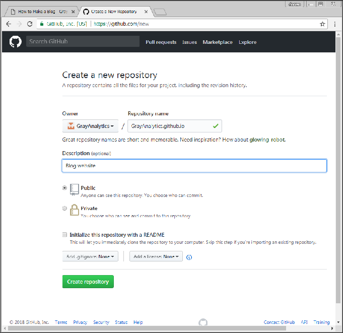
For a simple website like this, and given how user-friendly blogdown tries to be, for the default theme, we just need to upload the public folder.
However, Sourcetree doesn’t let you make a local git folder in a populated folder.
So you’ll…
- Move the contents of the /public/ folder to a temporary folder
- Clone your github repo to /public/
- Move the former contents of /public/ back into /public/
- Commit, Push, yadda yadda yadda
So, how to do that…
Clone
Your github repository will tell you the repository location.
Or you could just take a wild guess…
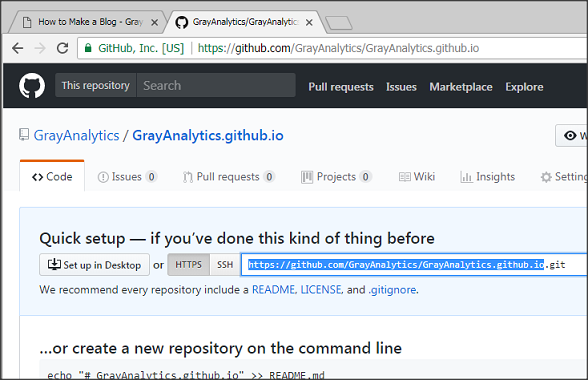
Back in SourceTree, select ‘Clone’.
Fill out the Top address bar using the github repository address we discussed above.
The Second address bar should be set to the /public/ folder.
The Third text field is, I think, what SourceTree will call this repository project.
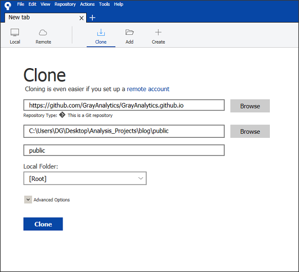
(Yeah, I screwed up and didn’t rename it to something meaningful…)
You’ll notice a .git file (possible hidden) will appear in /public/
Go ahead and copy the files back into /public/ (Number 3 above)
The new version of SourceTree has this annoying pop-up window. Hopefully other git GUIs don’t do this. 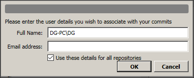
Yihui recommends running a bit of code here to create a .nojekyll
file.create('.nojekyll')
Go ahead and copy that into /public/
Go ahead and select ‘Stage All’. (You’ll want to load all of /public/ into the repository.)
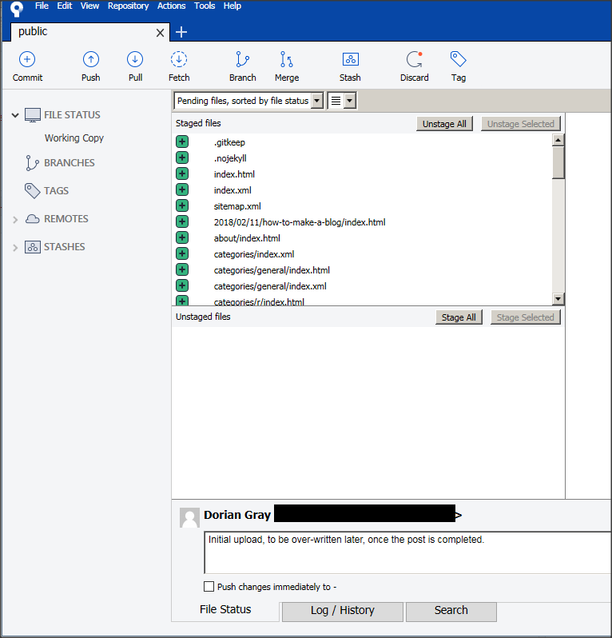
Put in a description, then ‘Commit’ and ‘Push’ (We’ll discuss what that is in another post, if ever)
You’ll get a github login pop-up.
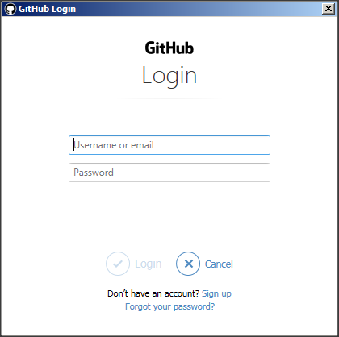
(you’ll get a few e-mails from github now. “Hey, someone just connected to your repository!”)
Complete!
And now we’re done, with only a handful of ‘magic spells’!
- (magic spell = ‘do this. I won’t explain why’)
You have created a webpage, and if you go to
https://[username].github.ioyou’ll see your webpage!
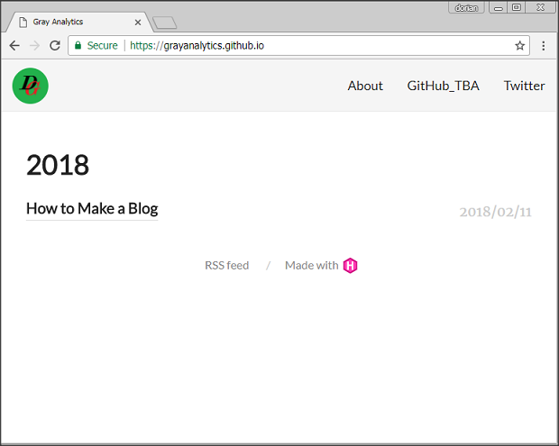
Notes for future posts
Hopefully, in the future
- I’ll have better formatting (still getting used to Markdown)
- posts will be shorter (this was a bit of a novel)